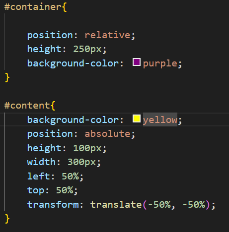

Por ter tido longos intervalos de estudos durante o terceiro módulo, vou fazer uma revisitação dos vídeos anteriores escrevendo um pequeno resumo corrido dos tópicos
A primeira adição do terceiro módulo foi o uso das ferramentas git e github, que em conjunto ajudam a gerir melhor os códigos que desenvolvemos. A partir deste momento, a abertura, criação e gerenciamento de pastas e repositórios se dá pela plataforma do github desktop
O github.io permite ainda hospedar sites em html e css, seguir outros criadores com funções de comunidade, e clonar repositórios para estudo e exploração.
Vale lembrar que ao fazer alterações no VS code (agora aberto através do github), é necessário fazer o commit to main para agregar as alterações ao repositorio OFFLINE e o push origin para agregar as alterações ao repositório ONLINE.
Além disso, trabalhamos extensivamente com imagens de fundo até então. É interessante que você reassista o capítulo 19, que trata vários aspectos e configurações das imagens de fundo
Continuação dos estudos normais a partir daqui. Talvez sejam adicionadas notas do capítulo 19 retroativamente acima desta nota.
Para centralizar um conteúdo/caixa verticalmente dentro de uma outra caixa, é necessário que tenhamos em mente uma caixa/div que cumpre o papel de container, e uma que cumpre o papel de conteúdo.
No exemplo de demonstração, definiremos as ids container e conteudo em uma div section e uma div artiicle respectivamente. É necessário que na folha de estilo, o container tenha o atributo position como relativo, e o conteúdo tenha o mesmo atributo como absoluto.
Neste caso, o margin: auto não poderá nos ajudar, pois ele não leva em conta a verticalidade das caixas.
Para que a div interna se centraliza absolutamente, precisamos setar os atributos left e right para 50%, e usar o comando transform com valor translate(-50%, -50%).
Abaixo um exemplo:
Abaixo temos o código que gerou o exemplo acima. /note que foi necessário usar um transform: translate() com valores diretamente opostos aos top e left que setamos, pois os parametros top e left, levam em conta o vertice superior esquerdo da div interna.
